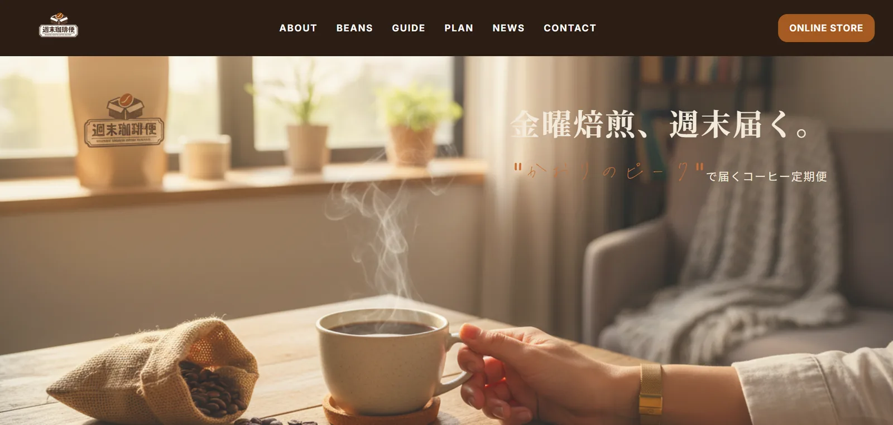
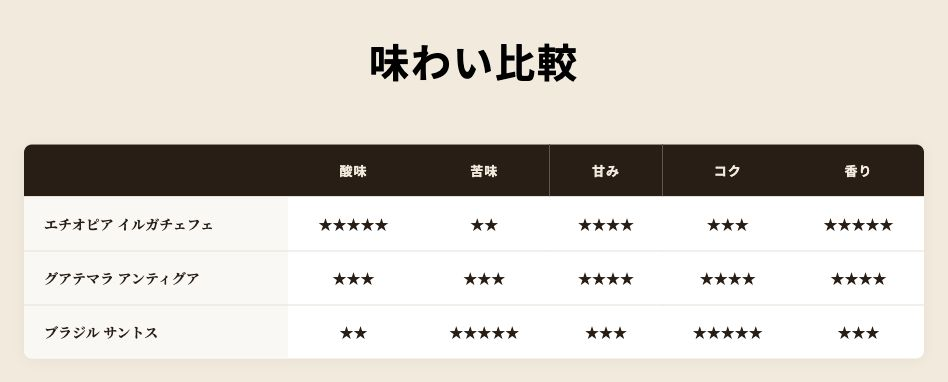

コーヒー定期便のブランドサイト
週末珈琲便
8ページのデザインをWordPressテーマとして実装
定期便の価値を伝えるデザインから、豆・プラン・ガイドなど8ページの実装とWordPressテーマ化まで担当。ページごとの役割と共通パーツを分けて構築しました。
自主制作・架空案件 ／ デザイン・静的実装・WordPressテーマ化

ターゲット・ペルソナ
設計上の想定
- ターゲット
- 自宅でコーヒーを楽しむ人
- ペルソナ
- 週末用に豆を取り寄せたいが、銘柄や定期便のプランを決めかねている人。

豆の比較
味わいを比較
豆紹介ページでは産地・焙煎度・フレーバー・抽出方法を揃えています。さらに酸味・苦味・甘み・コク・香りの比較表を設け、好みを探す手掛かりにしました。
豆を比較したあとにはプランページへのボタンを配置。商品を知ってから、購入条件を確認する順序です。
豆紹介の実画面を見る制作の背景
週末に届く定期便
コーヒー定期便を初めて検討する人に向けて、サービスの価値を短い言葉で伝えることから考えました。ファーストビューには「金曜焙煎、週末届く。」を置き、焙煎と到着の関係を示しています。
豆の情報とプランは別のページに分けました。サービスを知るページと、条件を比較するページを分けることで、知りたい内容から読み進められます。
8ページをテーマ化
静的に制作した画面を、共通のheader・footerと、豆・プラン・ガイドなどの固定ページテンプレートへ分けました。CSSとJavaScriptは、WordPressのenqueue処理からページに応じて読み込んでいます。
現在の各固定ページの主な内容はテンプレート内に記述しています。豆の情報を管理画面で項目別に更新する機能や、定期購入・決済は実装範囲に含みません。
制作範囲
制作概要
- 担当
- デザイン・フロントエンド・WordPressテーマ制作
- 構成
- トップ / ABOUT / BEANS / GUIDE / PLAN / NEWS / CONTACT / SHOP
- 技術
- HTML / CSS / JavaScript / PHP / WordPress
- デモ
- サイト内の回遊とフォームUIを確認できます。注文・決済・配送・問い合わせ送信は行いません。
架空ブランドの自主制作です。継続購入率や売上などの成果は測定していません。
実際の画面と操作は、制作デモで確認できます。